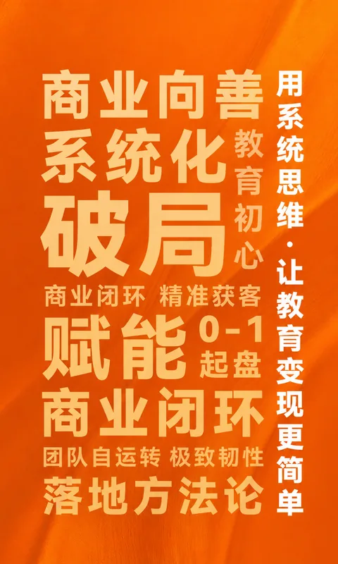
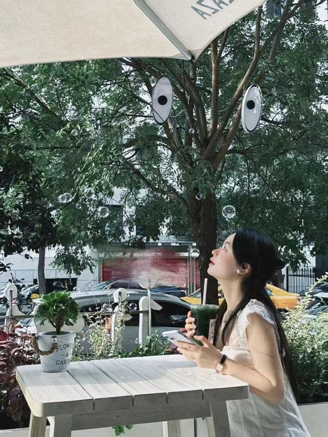
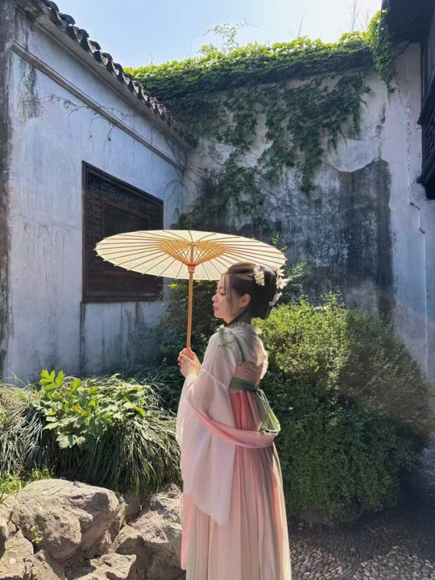

同城智能体
适合同城招生、本地信任和到店/到课转化。

登录后进入你的专属教育内容工作台。
没有账号？点击上方“注册”即可创建。
选题生成 / 文案智能体 / 竞品调研 / 皮皮分身
为教育老师打造的内容效率工具把上面值得留下的选题投进来；没灵感时，摇一颗新的开始。
每次抽取，都会从你的选题仓或皮皮老师的金句里随机掉落一颗。
抽中选题后，可以直接带去文案智能体；抽中金句，也可以收藏到你的表达库。
适合同城招生、本地信任和到店/到课转化。

把个人经历、教育理念和身份故事讲得真实。
围绕真实问题、专业判断和精准客户创作。

专注教育专业知识、方法拆解和高频问题。
用专业表达承接咨询、公开课和产品了解。
围绕日常表达、专业判断、案例和信任场生成内容。
面向小绿书图文场景，生成适合教育表达的内容。
围绕长文结构、观点表达和教育内容沉淀生成文案。
把已经写好的长文直接变成可预览、可复制的公众号视觉成品。
围绕城市、社区、本地家长和到店/到课场景，生成同城教育口播文案。
告诉我你的城市、业务、目标家长，以及你想解决的一个本地招生问题。
让每一份好内容，都有一身好排版。
在这里调整公众号排版的视觉细节。
从内容到成品，公众号文案与视觉排版集中在这里完成。
围绕教育观点、家长问题和真实案例，生成有结构、有信任感的长文。
粘贴已经写好的文章，选择视觉风格，一键生成可预览、可复制的公众号成品。
选择一个家长类型，和 AI 家长进行一轮真实对话。结束后生成多维评分报告，明确下一轮要补的销售动作。
点击任意一步，进入对应话术库和专项练习。
先看通用参考，再结合你的业务生成。
你是销售老师，皮皮会扮演家长。像真实咨询一样自然沟通。
这次表达让家长选择离开对话。
点击后开始生成本轮评分报告从一个教育关键词开始，找到相关竞品、爆款视频和可以转成自己内容的结构。
输入教育关键词后搜索。提取文案仅在你点击时发起。
让每次 AI 创作更了解你，也把自己的资料和成果收在一处。
面向教练使用：梳理交付 SOP 思维导图，并快速产出真实有温度的交付朋友圈。
输入想搭建的工作，生成可执行 SOP 思维导图。
直接点击节点即可修改；展开补充信息后可继续完善，并支持导出 draw.io。
把一次真实交付写成“问题、过程、变化、洞察”，并生成可发布的贴图号配图。
可直接编辑、复制文案；只展示 AI 智能合成后的最终成图。
把后台拆成独立模块，方便后续逐个补全真实管理能力。
自助注册账号默认没有 AI 权限；你在这里按学员购买的服务勾选功能、设置到期日或重置密码。
开通账号时请设置初始密码；请通过安全渠道单独告知学员。
独立维护皮皮的欢迎语、语气规则、知识库内容和互动表情包行为。
独立管理家长角色规则、六步法教练标准、模型和销售知识库。
查看学员每轮模拟的完整对话、六项能力评分和教练训练建议。
独立管理工作流搭建与交付朋友圈的启停、模型和生成规则。
新建智能体，并维护上下架、模型、开局引导、前台封面与生成 Prompt。
下架后前台立即隐藏，但历史配置仍会保留；新建智能体默认下架，配置完成后再上架。
为每个智能体选择图片并调整取景位置。
选择同一个智能体后编辑它的专属生成规则，保存后立即同步到前台。
API Key 不进入前端，后端运行时读取环境变量或本地凭据。只有启用状态的大模型供应商会进入模型调用链路。
文案智能体已优先绑定 Doubao Seed 2.1（Ark Plan），实际调用入口为 Plan 可用的 ark-code-latest。Ark Plan 不自动探测模型，需要手动维护 Plan 模型名。
维护选题、皮皮、竞品和销售功能的 Prompt，并在同一处绑定主模型、备用模型和数据供应商。文案智能体 Prompt 请在“文案智能体”模块维护。
按日期查看已用金额、账户余额与调用情况；未设置模型单价的调用不会计入金额。
硅基按已配置单价计算所选日期金额；火山和 TikHub 同步当前账户余额。